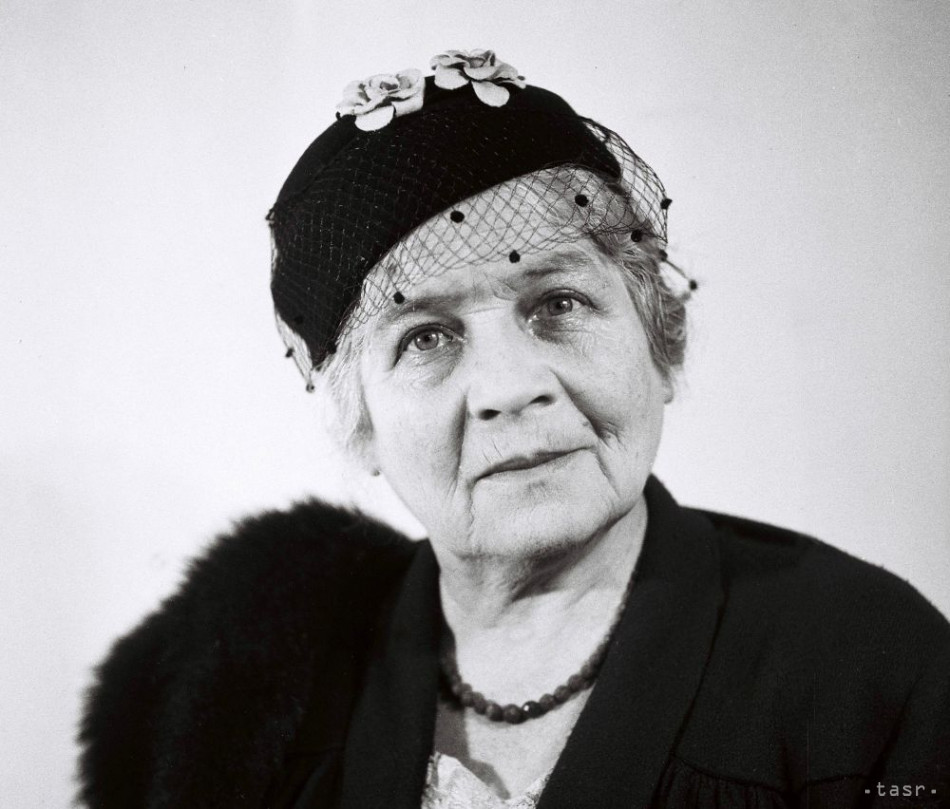

Slovenky pred nami
Ženy,
ktoré zmenili všetko.
Štyri ženy. Štyri rôzne životy. Jedna vec ich spájala — odmietli zostať neviditeľné v dobe, ktorá to od nich očakávala.
 Pokora
Pokora
Elena Maróthy-Šoltésová
Tridsaťtri rokov viedla Živenu. Zakladala dievčenské školy, zachraňovala ľudové výšivky, pisala pre ženy — a nikdy sa nesťažovala. Ani keď stratila obe deti.
Jej príbeh → Uprímnosť
Uprímnosť
Božena Slančíková-Timrava
Písala pravdu, aj keď nebola pekná. Nikdy sa nevydala, odmietla romantizovať ženský osud a jej próza šokovala tých, čo nechceli vidieť realitu.
Jej príbeh → Múdrosť
Múdrosť
Terézia Vansová
Napísala prvý slovenský román od ženy. Zakladala spolky, vydávala časopisy, budovala siete — s tichosťou, ktorá bola múdrejšia než hluk.
Jej príbeh →
OdvahaHana Gregorová
Prednášala, organizovala, písala eseje a novely. Nebála sa politiky ani verejného priestoru — v čase, keď ženy mali mlčať a byť neviditeľné.
Jej príbeh →Čo ich spájalo
Nežiadali dovolenie. Len robili, čo považovali za správne.
— Slovenky pred nami
Ich spoločný menovateľ
Rebelka nie je ten, kto kričí.
Rebelka je tá, čo nevzdá.
Pracovali bez uznania
Väčšinu svojej práce robili v tieni — bez titulov, bez platov, bez verejnej vďaky. Napriek tomu budovali inštitúcie, ktoré stoja dodnes.
Písali vlastným hlasom
Každá z nich písala — a každá si zachovala vlastný štýl, vlastný hlas, vlastnú pravdu. Nekopírovali, neprispôsobovali sa, nemlčali.
Vydržali dlhšie než ostatní
Žili dlhé životy plné práce. Nevyhoreli, nestiahli sa, neopustili pole. Ich odhodlanie bolo nie prudké, ale trvalé — a to je najvzácnejší druh odvahy.